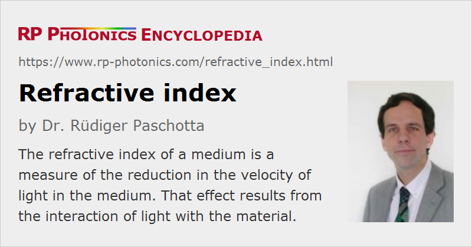

Refractive Index
Definition: a measure of the reduction in the velocity of light in a medium
Alternative term: index of refraction
German: Brechungsindex
Formula symbol: n
Units: (dimensionless number)
How to cite the article; suggest additional literature
Author: Dr. Rüdiger Paschotta
The refractive index of a transparent optical medium, also called the index of refraction, is the factor by which the phase velocity vph is decreased relative to the velocity of light in vacuum:
Here, one assumes linear propagation (i.e. with low optical intensities) of plane waves. Via the phase velocity, the refractive index also determines phenomena such as refraction, reflection and diffraction at optical interfaces.
The wavelength of light in the medium is n times smaller than the vacuum wavelength.
The refractive index can be calculated from the relative permittivity ε and the relative permeability μ of an optical material:
Note that the values of ε and μ at the optical frequency have to be used, which can deviate substantially from those at low frequencies. For usual optical materials, μ is close to unity.
Wavelength Dependence and Others Dependencies
The refractive index of a material depends on the optical frequency or wavelength; this dependency is called chromatic dispersion. Typical refractive index values for glasses and crystals (e.g. laser crystals) in the visible spectral region are in the range from 1.4 to 2.8, and typically the refractive index increases for shorter wavelengths (normal dispersion). This is a consequence of the fact that the visible spectral region, with high transmission of such materials, lies between spectral regions of strong absorbance: the ultraviolet region with photon energies above the band gap energy, and the near- or mid-infrared region with vibrational resonances and their overtones.
The refractive index is generally also dependent on the temperature of the material. In many cases, it rises with increasing temperature, but particularly for glasses the opposite is often the case, essentially because the density decreases with temperature.
Further modifications of the refractive index can occur through mechanical stress (photoelastic effect). Of course, changing the chemical composition e.g. by doping a material with some impurities can also affect the refractive index; this is widely used for graded-index lenses and for optical fibers, for example. In case of rare-earth-doped laser crystals, the refractive index change caused by the doping is often quite small due to a low doping concentration.
Compared with glasses, for example, semiconductors exhibit much higher refractive indices in their transparency region. For example, gallium arsenide (GaAs) has a refractive index of ≈ 3.5 at 1 μm. This is caused by the strong absorption at wavelengths below the bandgap wavelength of ≈ 870 nm. Consequences of the high index of refraction are strong Fresnel reflections and a large critical angle for total internal reflection at semiconductor–air interfaces.
The wavelength-dependent refractive index of a transparent optical material can often be described analytically with a Sellmeier formula, which contains several empirically obtained parameters. Extended versions of such equations also describe the temperature dependence; such an equation has been used for Figure 1. A precise knowledge of the wavelength and temperature dependence of the refractive index is important for phase matching of nonlinear frequency conversion in nonlinear crystal materials.
Anisotropic Media
In anisotropic optical materials, the refractive index generally depends on the polarization direction (→ birefringence) and the propagation direction (anisotropy). If a medium has a so-called optical axis, the refractive index for light propagation along this axis does not depend on the polarization direction.
Complex Refractive Index
A complex refractive index is sometimes used to quantify not only the phase change per unit length, but also (via its imaginary part) optical gain or propagation losses (e.g. caused by absorption). For light propagation in z direction, the optical intensity evolves according to
where one can see that the absorption coefficient α can be calculated as:
(Note that different sign conventions are used in the literature.)
Group Index and Effective Index
There is another type of refractive index, the group index, which quantifies the reduction in the group velocity. Extreme excursions of the refractive index and particularly the group index can occur near sharp resonances, as are observed in certain quantum optics experiments. This can be related to extremely large or small values of the group velocity (slow light).
For waveguides, each propagation mode can be assigned an effective refractive index according to its phase velocity.
Negative Refractive Indices
Even a negative refractive index is possible for certain photonic metamaterials (usually consisting of metal–dielectric composites), which have been demonstrated first in the microwave region, but begin to become a reality also in the optical domain. Negative refractive index values give rise to a range of intriguing phenomena. For example, refraction at the interface between vacuum and such a material works such that the refracted beam is on the same side of the surface normal as the incident beam.
Negative refractive indices also sometimes occur in geometrical optics, because some authors formally assume the sign of the refractive index to be flipped upon reflection on a surface. With that convention, one can apply certain equations for refraction phenomena also to reflecting surfaces.
Suppliers
The RP Photonics Buyer's Guide contains 5 suppliers for refractometers.
Questions and Comments from Users
Here you can submit questions and comments. As far as they get accepted by the author, they will appear above this paragraph together with the author’s answer. The author will decide on acceptance based on certain criteria. Essentially, the issue must be of sufficiently broad interest.
Please do not enter personal data here; we would otherwise delete it soon. (See also our privacy declaration.) If you wish to receive personal feedback or consultancy from the author, please contact him e.g. via e-mail.
By submitting the information, you give your consent to the potential publication of your inputs on our website according to our rules. (If you later retract your consent, we will delete those inputs.) As your inputs are first reviewed by the author, they may be published with some delay.
See also: refraction, velocity of light, Sellmeier formula, Kramers–Kronig relations, group index, effective refractive index, nonlinear index, index matching fluids, optical materials
and other articles in the category general optics
|  |
If you like this page, please share the link with your friends and colleagues, e.g. via social media:
These sharing buttons are implemented in a privacy-friendly way!